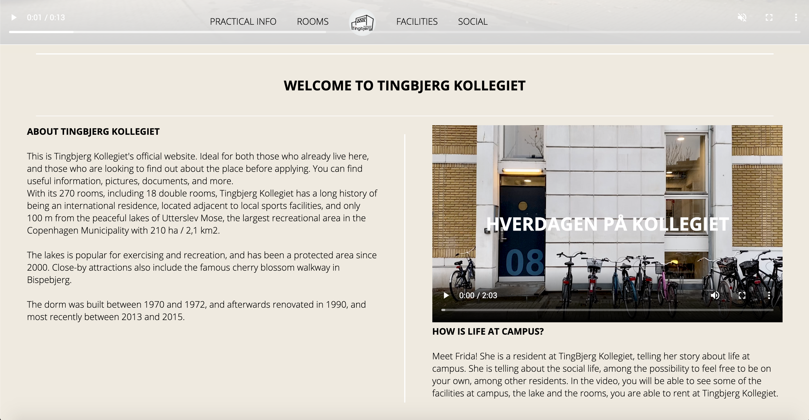

Portfolio
WEB
Desktop Version

Mobile Version

I dette forløb skulle jeg opbygge og kode mit første website.
I undervisningen blev jeg introduceret til det gridbaserede layout der skulle bruges og lærte derefter hvordan jeg skulle implementere kodesprogene HTML og CSS for at opnå det ønskede layout.
Efterfølgende lærte vi om responsivitet hvor jeg lærte at implementere mediaqueries i min CSS.
Ud fra et udleveret layout skulle jeg udføre en wireframe hvor jeg derigennem fik kendskab til programmet Adobe XD.
Jeg blev tildelt stilarten “Modern Futuristic” og skulle designe ud fra denne.
Derudfra begyndte jeg at researche stilarten og undersøgte hvilke design elementer jeg kunne implementere.
Vi lærte om typografityper i undervisningen. Ud fra denne viden valgte jeg bevidst forskellige typografityper i mit site.
I mit splashbillede der befinder sig på sitets landingpage valgte jeg at bruge en display font der havde et “futuristic” udtryk.
Til min brødtekst og headings valgte jeg en geometric sans serif. Dette gjorde jeg fordi ud fra min research med stilarten, kom frem til at der blev brugt mange geometriske former i layoutet og tænkte det var en fed måde at implementere dette.
Jeg valgte en monokromatisk farvepalette med farven lilla da farverne i “Modern Futuristic” var betegnet som “fluorescent”.
Farvepaletten blev især brugt da jeg skulle lave mit splashbillede og lavede nogle sferer der havde en gradient effekt.
UDFORSK SITET
UX
I User Experience (UX) forløbet fik jeg til opgave at lave en webshop der sælger t-shirts.
Det meste af arbejdet foregik i programmet Adobe XD, som jeg var blevet bekendt med i forrige forløb.
Inden vi skulle gå igang med at designe blev vi introduceret for flere forskellige research metoder som f.eks. Google Forms Surveys og Desk Research.
Idé
Ud fra resultaterne jeg opnåede i min research kunne jeg begynde at brainstorme forskellige webshop koncepter som jeg følte manglede på markedet.
Jeg valgte at kreere en webshop der solgte Harry Styles merchandise.
Dette gjorde jeg på grundlag af, at jeg følte der manglede bedre fan merchandise til fansene.
Da jeg både var afsender og modtager af mit produkt ved at være en del af målgruppen, kunne jeg meget lettere sætte mig i brugerens sko og finde på løsninger som copywriting og micro copywriting der passede til min målgruppe.
Det blev meget hurtigt til et passionsprojekt for mig da jeg virkelig udfoldede mig kreativt under hele forløbet og syntes hele konceptet omkring UX var utroligt spændende og jeg drømmer nu om at starte Sunny Cherry Merchandise op en skønne dag.
IDE OPGAVE
Prototype
Vores webshop koncept skulle implementeres i Adobe XD som prototype. Jeg havde allerede kendskab til design delen af programmet, men her lærte vi endvidere om Prototype delen.
Jeg skulle også bruge Adobe XD til at designe mine UI-elementer. Ud fra de visuelle UI konventioner, valgte jeg et meget simpelt men farverigt design. Jeg designede de forskellige Call To Action knapper og fandt UI kits på nettet, hvor jeg inddrog ikoner derfra.
Mit fontvalg til headings og CTA knapperne var et bevidst designvalg jeg tog. For at understrege endvidere at webshoppen omhandlede Harry Styles, valgte jeg at bruge samme skrifttype der blev brugt til hans andet albums branding.
TEST PROTOTYPEN


Pitch
I slutningen af forløbet skulle vi pitche vores koncept.
Jeg præsenterede det data jeg havde samlet gennem de forskellige research metoder der blev brugt i fire kategorier: Et problem, En vision, En kort historie, Et citat og noget der tiltaler.
Jeg kom også ind på mine UI og UX design valg, samt viste min arbejdsproces gennem screendumps af skitser, moodboard og styletile.
Afsluttende vis forklarede jeg om min tænke højt test og hvilke resultater jeg havde fået derigennem.
PITCH PRÆSENTATION
ANIMATION
Svampe Jagten
Under animationsforløbet fik vi stillet til opgave at lave vores eget spil. Dette spil skulle kodes i HTML, CSS og JavaScript.
JavaScript var et nyt kodesprog vi blev introduceret til under dette forløb. Det angiver hvad siden gør.
Vi blev introduceret til en masse forskellige CSS animationer gennem undervisningen. Jeg valgte at implementere 2 af disse. En falde animation og en forsvind animation.
Animationen i CSS bliver sat i gang med @keyframes og ved hjælp af JavaScript kunne jeg vælge hvornår animationerne skulle starte og stoppe.
Jeg lærte endvidere at bruge inspector tool men her fokuserede vi på konsollen. Dette gjorde jeg kunne se hvornår mine funktioner blev kaldt og derudfra se om min JavaScript kode fungerede som den skulle.

Designproces
Inden jeg kunne kode mit spil sammen skulle jeg igennem en længere designproces.
Jeg valgte at lave et spil om at fange svampe, da det var sæson for svampehøstning da vi startede forløbet.
Vi skulle finde en stilart der kunne inspirere os, og ud fra længere research af forskellige stilarter valgte jeg at drage inspiration fra Super Mario Bros.
Jeg valgte igen i dette forløb en skrifttype med en betydning. Fonten jeg har valgt til "Svampe Jagten" er en display font, hvor jeg syntes at bogstaverne havde et fedt og anderledes look der lignede lidt svampe med de rundede "bubbly" kanter.
Alle vores figurer, spilelementer, ui elementer og baggrundsdesign skulle laves i Adobe Illustrator, hvor jeg derigennem fik bedre kendskab til de basale redskaber i programmet.
Efter alt design var på plads skulle jeg lave både et aktivitetsdiagram og statemachine diagram inden jeg kunne begynde at kode.
Jeg var dog ramt af sygdom under det meste af forløbet og derfor er mit spil ikke helt færdiggjort.
SPIL OPGAVE
INDHOLD
Indhold forløbet introducerede os til brugen af billeder, video og musik i den digitale medieproduktion.
Der var fokus på brug af Photoshop som billedredigeringsprogram og Premiere Pro til videoredigering.
Vi blev introduceret til forskellige fotostile og generel teori om videoproduktion og klipning af disse.

Redesign af Tingbjerg Kollegiet
I vores redesign opgave skulle vi i grupper redesigne en selvvalgt virksomheds hjemmeside og skabe nyt digitalt indhold til dem.
Min gruppe valgte Tingbjerg Kollegiet.
I denne opgave skulle vi bruge alt hvad vi havde lært i løbet af semestret og implementere det i vores redesign.
Gennem hele processen brugte vi Double Diamond metoden samt SCRUM til at holde overblik over hele arbejdsprocessen.
Vi anvendte forskellige test metoder som BERT-test gennem Google Forms Survey. Denne test valgte vi at bruge for at få et overblik over hvad brugerne mente om virksomhedens nuværende hjemmeside, for så at finde ud af hvordan vi kunne optimere den og tilpasse den bedre til målgruppen.
Derfra kunne vi begynde på vores designproces ved bl.a. at skabe sitemaps, wireframes, moodboards og styletiles.
Der skulle laves noget preproduktion til interviewet i former af storyboard, log-line, interviewguide og synopsis.
Vi valgte at lave et interview med en beboer på kollegiet, som kunne give et indtryk om hvordan det er at bo på Tingbjerg Kollegiet.
Alle de nye billeder blev skudt på et DSLR kamera og efterbehandlet i Photoshop.
Vi kodede hele den nye hjemmeside i HTML, CSS og JavaScript.
Hele oplevelsen med projektet var meget spændende og samtidig udfordrende da vi skulle implementere så meget viden og færdigheder vi havde lært gennem hele semestret.
DESIGNDOKUMENTATION
Pilotprojekt
Mit pilotprojekt var også en gruppeopgave, dog med kun 2 medlemmer.
Opgaven gik ud på at vi skulle interviewe en person omkring deres passion. Vi endte med at interviewe en af mine gode venner Sebastian og hans passion for fotografi og hvordan det er at være freelance fotograf.
Pre- og selve produktionen blev lavet i fællesskab hvor vi planlagde interviewet ved at lave en interviewguide samt ideer til B-rolls vi gerne ville filme.
Vi gjorde brug af rule of thirds og placerede Sebastian derudfra under interviewet.
Post produktionen blev lavet individuelt og jeg valgte derfor at lave min endelige video til et collab mellem Sebastians brand og mit eget.
Det resulterede i at Sebastian blev så glad for videoen at han endte med at bruge den som indhold til sin Instagram.
Jeg brugte Premiere Pro og ud fra en opgave fra undervisningen, havde jeg stiftet kendskab til de basale redskaber i programmet.